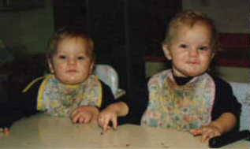
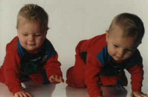
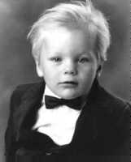
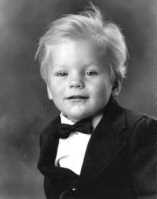
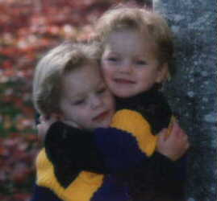
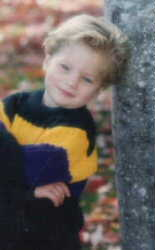
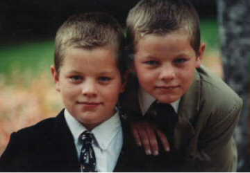
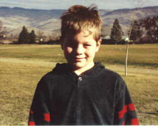
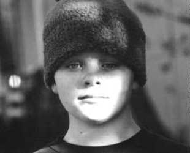

Tiana's Memories:
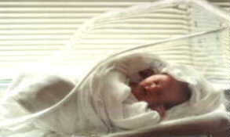Twin Boys: the Definition of Destruction (1995)
My twin brothers are absolute terrors! They can destroy the house in a matter of minutes and they're only three years old. When everything is quiet, something is being destroyed. One day when it was quiet, my mom went to search for the twins to stop them from demolishing something, but she had a hard time finding them because they were outside. She finally found them in the barn using her canning jars for grenades. They had broken about thirty jars, so in her rage, my mom spanked them and locked them in their room. After only a few minutes, my mom felt like she should apologized to them, so she unlocked their room and went in. The twins were gone, the window was open, and the screen was missing. They had jumped out the window (a six foot drop) to escape their imprisonment. While my mom searphed for them from the window, they were creating more havoc. In a matter of minutes they had jumped in the hot tub with all their clothes on, ran around in the dirt, then tracked mud in the living room and sat on the freshly shampooed furniture. What happened after that is too exhausting to repeat. I just feel sorry for anyone who finds out they're expecting twin boys.
Dallas's Update
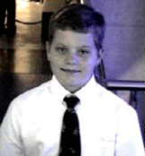Spring 2003
I'm an 11 year old boy. I'm 5'3" and almost 130 lbs. I have a twin named Weston. I'm outgoing and talkative and love to lend a helping hand to whoever needs it. I got an award from my school for having a good sense of humor. I played football for my school and am hoping to play baseball next year. I love fishing, boy scouts and biking. My favorite color is green. My favorite thing to eat is biscuits 'n' gravy but I hate cooked carrots. When I grow up I'd like to be in Real Estate.